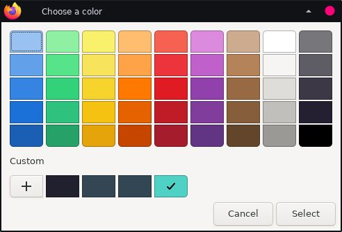

If you don't wanna read this and just jump straight into the color picker, click here.
Have you ever wondered when you see color hex codes, and some six-letter hexadecimal value makes colors, how does that work? In this blog, I will explain to you not just color hex codes, but also RGB color values.
How computers emit colors
If we take a look at our screen right now, if we zoom in until individual pixels, you would see that those individual pixels do not have the colors on their own. An individual pixel consists of three sub-pixels, which emit the color red, green, and blue. Then, those individual pixels will emit colors based on the instructions on each sub-pixels on how much on this sub-pixel will be emitted. For example, when you see the color blue, you're seeing the red and green subpixel getting cut off/turned off and only the blue subpixel lighting up. That's why you see the color blue.
How humans perceive colors
🤓 umm why exactly red, green, and blue?
For this case, we go back to our human eye.

Our eyes has 3 color receptors, which perceive the color red, green, and blue. When we see something, it's actually a light reflection of that something, and when it hit our color receptors, it will send how intense is that color to our brain. And then, our brain processes it to an image, and that's what we see everyday. So, in reality, you're not seeing something, you're seeing the reflection of something.
And that's why screens have three colors which are red, green, and blue as its subpixels. Screens just have to set how intense each subpixels are, produce the light, and when it hit a human's color receptor, it will look like a whole new color.
How color values/codes works
🤓 umm how does the computer know set the intensity of subpixels?
And that's where color values comes in. There are two color value format (that we are going to talk about in this blog), which is hex code and RGB value.
Hex code looks like: #1c71d8, and
RGB code looks like: rgb(28, 113, 216).
Hex color codes gives out color datas by using hexadecimal values. Computers will read it by dividing the code into three parts. For example, #1c71d8 will be 1c, 71, and d8. Those are the intensity of the color red, green, and blue in order. 1c means the intensity of red is 28. 71 means the intensity of green is 113, and so on.
On the other hand, RGB color codes just explicitly tells the intensity of the colors using decimal numbers. So, rgb(28, 113, 216) is pretty self-explainatory. 28 means the intensity of red, and so on.
Color intensity goes until 255 (or ff in hexadecimal value) and the lowest possible value is 0. So, if you see #ffffff or rgb(255, 255, 255), it means that all subpixels are in maximum intensity. It will make your brain perceive white. On the other hand, if you see #000000 or rgb(0, 0, 0) it means black. All subpixels are in minimum intensity, which means there is no light passing through, making humans see black.
After this is an actual color picker where you can interact and get colors with: